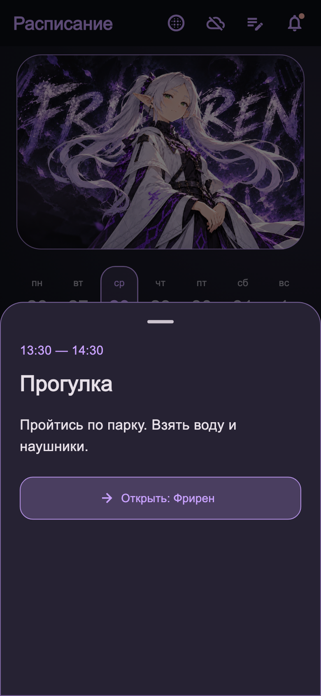

Расписание
Понять, что сейчас. Увидеть, что дальше.
Длинного списка дел было мало: в течение дня нужно быстро понять, на чём сосредоточиться. В разделе Фрирен появились выбор даты, последовательность задач и блок «Сейчас и дальше».
Из расписания можно открыть конкретную задачу, посмотреть детали и оставить заметку. Здесь показываю эти экраны: нужная информация остаётся рядом с делом, к которому относится.
